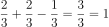

Já na Grécia antiga, filósofos como Tales notava que, por exemplo, o âmbar era um objeto que apresentava o comportamento de atrair corpos leves ao ser atrito com um tecido. Dois mil anos depois, Coulomb, Ampere e outros cientistas estabeleceram os principais fundamentos da eletricidade, essencial na atualidade.

CulturaeCulture.it,2016
>Eletrostática: parte do estudo da eletricidade, no qual, as cargas não têm comportamento
ordenado, exceto, por curto tempo.
>Objeto de estudo: carga elétrica.
>Gerada pelo movimento de spin[propriedade essencial das partículas quânticas] dos elétrons e
prótons.
- >Os elétrons e prótons têm algo em comum:
- • Ambos possuem carga.
- Suas cargas têm o valor equivalente a carga elementar[menor valor de carga existente] que é representada por"e".
- • Foi por conveniência que os cientistas adotaram os elétrons como tendo carga negativa, os prótons com carga positiva, assim, os nêutrons não possuíam carga.
- • Só liberam energia se tiverem chance de recuperá-la.
- • Próton formado por up + up + dow →
 - • Nêutron formado por up + dow + dow →


Energia Nuclear,2019

Bernoulli, [s.d.]
>Coulomb é a unidade de medida da carga elétrica no SI.
>Só se pode fornecer ou tirar um valor inteiro de carga para um corpo.
>>Se determina a quantização de uma carga elétrica multiplicando o saldo de cargas do corpo com
o valor da carga fundamental.
>>Q = n.e => Q = n.1,6.10-¹⁹ | Q = carga, n = saldo elétrico do corpo, e = carga elementar.
>Lei de Dufay: Avalia a interação entre duas cargas.
>>Cargas com sinais opostos se atraem, cargas com sinais iguais se repelem.
>Princípio da conservação das cargas elétricas: Em um sistema fechado, o valor da soma total das
cargas antes e depois de um evento de troca elétrica se mantém.
>>Pode-se ver isso em fios da imagem 3.
| CONDUTOR vs ISOLANTE | |
|---|---|
| Condutor | Isolante |
| Permite o fluxo de cargas pela sua estrutura sem muitas dificuldades. | Impedem o fluxo significativo de cargas através de sua estrutura. |
| Possuem cargas livres ou facilidade em obtê-las. | Não possuem cargas livres ou facilidade para obtê-las. |
|
Podem ser: • Sólidos[metais ou grafite]: O que movimenta entre eles são os elétrons. • Líquidos[soluções iônica]: O que movimenta entre eles são os íons. • Gases[quando ionizados]: O que movimenta entre eles são os elétrons e íons. |
Podem ser também sólidos, líquidos ou gasosos. |
| Não há absoluta definição de isolantes e condutores. Qualquer isolante, exceto, o vácuo Em determinadas condições podem conduzir eletricidade. | |
>Eletrização:
>>Em estado natural matéria tende a ser neutra,ou seja, mesmo número de elétrons e prótons, assim, eletrizá-la significa alterar tal estado.
>>Se retirar elétrons de um corpo ele fica carregado positivamente, pois terá mais cargas positivas que negativas. >>Se fornecer mais elétrons para um corpo ele fica carregado negativamente, pois terá mais cargas negativas do que positivas. >>Existem 3 formas de eletrização: por atrito, por contato e por indução.
| Partículas | Carga elétrica (C) | Massa (kg) | Massa relativa |
|---|---|---|---|
| Elétron | -1,602x10−¹⁹ | 9,109×10–³¹ | 1 |
| Próton | 1,602x10−¹⁹ | 1,673×10–²⁷ | 1,84x10³ |
| Nêutron | 0 | 1,675×10–²⁷ | 1,84x10³ |
IsméreDenise(Marislye),[s.d.]
• A ecologia estuda a relação dos seres vivos com o meio ambiente e suas relações de
interdependência.
->Nenhuma espécie é independente.
->Refletir a importância do meio ambiente para articular estratégias a fim de manter o
equilíbrio ambiental.
->Desenvolvimento vs Sustentabilidade.
> Teoria preservacionista: restringe acesso dos seres humanos à região que quer preservar.
> Teoria conservacionista: concilia a convivência humana com a natureza.
• Relações entre os seres vivos:
Intraespécies [entre seres da mesma espécie]
Interespécies [entre seres de diferentes espécies].
> Podem ser harmônicas [não gera prejuízo aos envolvidos] ou desarmônicas [gera prejuízo a pelo
menos um dos envolvidos].
• Níveis de organização:
_1º Organismo > unidade fundamental de estudo
_2º Populações > organismos de mesma espécie, vivendo numa mesma região e ao mesmo tempo
_3º Comunidade > diferentes populações que vivem numa mesma região e na mesma época
_4º Ecossistema > a comunidade somada aos fatores abióticos
_5º Biosfera > União de todos os ecossistemas
_Espécies > [organismos que têm capacidade de se reproduzirem e gerarem descendentes
férteis]
| Relações Intraespécies | Harmônica | Colônia |
|---|---|---|
| Sociedade | ||
| Desarmônicas | Canibalismo | |
| Competição | ||
| Relações Interespécies | Harmônica | Mutualismo |
| Protocooperação | ||
| Comensalismo | ||
| Inquilinismo | ||
| Desarmônicas | Predatismo | |
| Parasitismo | ||
| Competição | ||
| Amensalismo | ||
| Esclavagismo |

passeidireto,[s.d.]
→Alguns conceitos:
Biocenose ou Biota => comunidade;
Biótopo => parte não viva como pluviosidade, ph, radiação, etc;
Fatores bióticos => fatores que são vivos;
Fatores abióticos => fatores que não são vivos;
Bioma => comunidade estável (com climas e vegetações semelhantes);
Hábitat => onde a espécie vive;
Nicho ecológico => conjunto de várias características como comportamento, relações, etc que
determinado ser vivo desempenho;
Ecótono => zona de transição entre ecossistemas no qual as características deles se
misturam;
Biomassa => Matéria orgânica que compõe os seres vivos(atenção: água nos corpos não conta);
Nível trófico => A posição do ser vivo numa cadeia alimentar.
• Cadeia e Teia Alimentar são representações gráficas das relações alimentares dos seres
vivos.
> Cadeia alimentar: representação linear dessas relações.
> Teia alimentar: representação que liga várias cadeias alimentares.
> Categorias: Produtores, consumidores(“vários” níveis) e decompositores.
Produtores:
->Autótrofos(Produzem seu próprio composto orgânico/alimento).
->Fotossíntese e Quimiossíntese.
Consumidores:
->Heterótrofos(Não produzem próprio alimento os obtendo de outros seres)
->Tipos: Herbívoros, Carnívoros ou Omnívoros.
->Sua posição varia de acordo com a cadeia alimentar(em uma cadeia pode ser consumidor primário
e em outra secundário… ).
Decompositores:
->Fungos e bactérias.
->Decompõem/"Recicla" restos mortais de seres vivos(de plantas até mamíferos, etc).
•Nível Trófico:
-> Posição de um organismo dentro das relações alimentares.
-> Decompositor não tem nível trófico pois participa em várias partes.
•Bioacumulação/Biomagnificação:
->Bioacumulação: retenção de compostos não biodegradáveis nos organismos.
->Magnificação: aumento da concentração de Bioacumuláveis ao longo da cadeia alimentar.
->Se deve pensar não só no impacto que nós sofremos, mas também que os outros seres sentem.
->No topo da cadeia a bioacumulação será maior.

parece, mas não é (Foto: Indio San)
> 500 - 400 a.c. Empédocles criou a teoria da cosmogênica dos quatro elementos clássicos
(água,
fogo, terra e ar).
> Aristóteles formularia melhor tal hipótese dos quatro elementos, mais ou menos segundo a
figura 2.
> Modelo ~ Demócrito e Leucipo:
>> Elaboraram a possibilidade da matéria ser formada por vários átomos(menor parte
indivisível
da matéria), criando tal conceito de átomo, que sabemos hoje está precipitado pois é
possível
dividi-lo mas isso não os tira a importância.
figura 2: Representaçãoda hipotese dos 4 elementos de
Aritoteles
autora,2023
>Modelo ~ Thomson
>>Modelo Pudim de Passas
>>Neste modelo surge a natureza elétrica da matéria.
>>Átomo seria formado por massa de carga positiva e elétrons de carga negativas espalhados por essa massa.
>>Principal evidência: Experimento dos Raios Catódicos.
Explicação) Em uma ampola selada coloca-se gás em baixa pressão, nele se aplica diferença de potencial de 10 até 4 volts que produz feixe luminoso. Se o átomo não tivesse natureza elétrica como no modelo de Dalton, o feixe teria trajetória reta porém ele apresentou desvio demonstrando natureza elétrica dos átomos.
>>Millikan(1909) complemente ao através de experimentos descobrir que a carga do elétron é 1,6*10^19C e a massa é 9,1*10^31kg.
>Modelo ~ Rutherford
>>Modelo Sistema Solar
>>Estavam estudando o modelo de Thomson, especificamente os ângulos de desvio que deveriam ser pequenos, mas, ao realizar um experimento de lançar partículas alfas de polônio por uma fina folha de ouro e os ângulos foram muito maiores do que o previsto.
>>>Desse modo, para haver esse desvio o átomo seria composto por duas regiões, uma que seria o núcleo rígido que se chocava na folha e a eletrosfera que seria mais leve.
>>Assim, nesse modelo o núcleo seria carregado positivamente e teria os elétrons ao redor dele descrevendo órbita elíptica.
!)Falha do modelo: Os elétrons, por ter carga negativa, iriam colidir com o núcleo, que teria carga positiva.

transformação,2020
>A linguagem segundo a teroria de Jakobson deveria ser estudada pela perspectiva de seus
fatores construtivos do ato de comunicação.
>"fatores construtivos do ato de comunicação" = Elementos da comunicação: Remetente,
mensagem, contexto, código, canal[contato] e destinatário
>As funções da linguagem tem particularidades e são vinculadas a cada um dos seis
elementos[fatores] da comunicação

autora,2023
Referencial ⇨ Contexto
•A mais utilizada.
•Postura informativa e pragmática.
•Identificada em textos jornalísticos, relatos científicos, manuais técnicos, artigos,
reportagens,
entre outros.
•Utilização da terceira pessoa e de uma linguagem denotativa[sentido literal].
•Devem dar uma única interpretação às informações que lhes são apresentadas.
Emotiva ou expressiva ⇨ Remetente
•Constitui-se a partir da parcialidade, da emotividade.
•Tem-se o emprego da primeira pessoa, marcando a subjetividade.
•Remetente quer ressaltar o seu estado sentimental, o importante não é o real em si, mas o modo
expressivo a partir do qual ele será visto e relatado pelo ser.
•Interjeições, de pontos de interrogação e exclamação, de reticências, do diminutivo ou do
superlativo.
Poética ⇨ Mensagem
•Jogo criativo do ato da linguagem
•Valoriza não o conteúdo, mas o como dizer, o modo lúdico utilizado na elaboração do texto.
•Tal preocupação estética explora aspectos sintáticos, semânticos e morfológicos da língua,
criando inversões, expressões metafóricas, neologismos, além de jogos sonoros e visuais.
Apelativa ou Conotativa ⇨ Destinatário
•É feita pensando no processo de recepção
•Texto tenta estabelecer uma interlocução com o seu leitor / ouvinte / público com o intuito de
persuadi-lo
•Muito comum em propagandas, mas, pode ser identificada em outros textos, como campanhas
políticas, etc.
•Engajado, verbos no imperativo, simular diálogo, ordem, súplica, indagação ou
chamamento.
Fática ⇨ Canal
•Tanto o remetente quanto o destinatário irão “testar” se estão se entendendo.
•O objetivo desse tipo de mensagem é testar o canal, prolongar, interromper ou reafirmar a
comunicação, não no sentido de, efetivamente, informar significados.
•Expressões como “alô”, “oi”, “hum-hum”, “sei” são pronunciadas sem que necessariamente queiram
significar algo, você apenas está testando se o outro está ouvindo.
Metalinguagem ⇨ Código
•Encontra-se nas produções comunicativas que enfocam o código utilizado, ou seja, que salientam
o exercício da produção e da recepção pela via da linguagem.
•Se verifica quando a temática é, em si, a manifestação da linguagem.
•Analisar a linguagem que estrutura a própria forma comunicativa.
Carlos Drummond de Andrad
Vida:
>Nasceu em MG, 1902.
>Pais proprietários de terras
>>Boas condições, estudou em MG e RJ.
>Aos 20 anos começa publicar no Diário de Minas.
>Aos 25 anos funda “A Revista”.
>1º livro publicado ~ “Alguma poesia”, 1930.
>Associado à 2º geração do modernismo.
>Marcado: Verso livre; Coloquialidade; Engajamento político (dado momento).
>Resgata a influência surrealista e simbolista.
Poema - “Meio do caminho”,1928.
>1º fase modernismo.
>10 versos: 7 vezes repete “tinha uma pedra” e 6 vezes repete “no meio do caminho”.
>Linguagem simples e ausência de padrão métrico.
>Provocou críticas.
>Oposição ao parnasianismo.
>>Olavo Bilac tinha um soneto chamado “Nel Mezzo del Camin”.
Contexto social:
>Período conturbado:
>>Ascensão de movimentos fascistas.
>>Crise 1929.
>>Polarização Mundial [Comunismo vs Nazisfacismo].
>>Revolução de 30 [Fim República Velha, “bloqueio” da posse de Prestes].
>>Estado Novo.
>>Guerra Fria.
Fases Poéticas:
1ºFase: “Eu maior que o mundo”
>Obras: “Alguma poesia”(1930) e “Brejo das almas”(1934).
>Relação do indivíduo e do mundo, mas com foco no “eu” caracterizado como um sujeito deslocado.
>Temáticas cotidianas, humor irônico e sarcástico.
2ºFase: “Eu menor que o mundo”
>Obras:”Sentimento no mundo”(1940),”José”(1942) e “Rosa do povo”(1945).
>Angústia perante o meio em que está inserido.
>>Sensibilidade do eu lírico perante o mundo.
>>Distância postura individualista de antes.
>>Temática desesperada.
>>Tom de esperança em dados momentos.
>>Tom politicamente engajado.
3ºFase: “Eu igual ao mundo”
>Obras: “Claro enigma”(1951),“Fazendeiro do ar”(1954) e “Lição de coisas”(1962).
>Intelectualização dos temas.
>Recorre a metáfisica.
>Tom mais pessimista e melancolico.
>Linguagem perde caráter “livre” , retorna ao tradicionalismo estético e com certo rigor formal.
>São representados por letras maiúsculas.
>REPRESENTAÇÕES:
>>Por extensão[ou listagem] ~ Enumera-se itens os separando por vígulas.
*A = {a, e, i, o, u} | B = {2,3,5,7, ...}
>>Por compreensão ~ Expõe caracteristica do conjunto para representá-lo.
*A = {x/x é vogal} | B = {x ∈ N/x é primo}
>>Por figuras ~ Giagrama de Venn.
>TIPOS:
>>Vázio ~ Não possui elementos.
*A = {} = ∅ | B = {x ∈ N/ x < 0}<
>>Unitário ~ Só possui um elemento.
>>Finito ~ Pode - se contar e classificar todos elementos.
>>Infinito ~ Não consegue-se contar e classificar todos seus elementos.
>Subconjuntos ~ Quando todos elementos de um conjunto A estão contidos em um conjunto B.
*∅ é subconjunto de qualquer conjunto.
>Conjunto das partes ~ Formado por todos sibconjuntos de um conjunto.
*A = {1,2,3} -> P(A) = {∅, {1},{2},{3},{1,2},{1,3},{2,3},{1,2,3}}
*Número de subconjuntos de um conjunto pode ser deduzido por "n(P(A)) = 2^n(A)", sendo n(A) o número de elementos de A.
>OPERAÇÕES:
>>União(∪) ~ A união dos conjuntos A e B é formado por todos elementos de A e de B.
>>Intersecção(∩) ~ Elementos comuns entre os conjuntos envolvidos.
>>Subtração ~ A subtração do conjunto A e B será todos elementos de A que não tem em A.
*A={1,2,3}, B={2,3} -> A-B={1}
>>Diferença simétrica(△) ~ Forma-se pelos elementos que pertencem a somente um dos conjuntos [os elementos que não sejam intersecção].
*A={1,2,3}, B={2,3,4} -> A△B={1,4}
>>Complementar ~ Se A está contido em B, os valores que faltarem para A ser igual a B será os complementares.
*Se os dois tiverem os mesmos elementos o complementar será vazio.
*Se A não estiver contido em B, o complementar não existirá.
CONJUNTOS NUMÉRICOS:
>Existem infinitos conjuntos numéricos, entre eles os conjuntos numéricos fundamentais.
>Conjuntos numéricos fundamentais:
1.Naturais(N) - Obtidos por meio contagem natural.
2.Inteiros(Z) - Formados pelos naturais e seus opostos simétricos.
3.Racionais(Q) - Pode ser escrito em forma de fração, onde o denominador é diferente de zero.
4.Irracionais(Q') - Não pode ser escrito em forma de fração, ex.: √2, pi, etc.
5.Reais(R) - Formado pelos racionais e irracionais.
6.Imaginários(I) - Todos números que não são reais, como raiz quadrada de números negativos, etc.
7.Complexos(C) - Formado pelos reais e imaginários.
>Pertinência(∈) ~ Relação de um elemento para um conjunto.
>Inclusão(⊂) ~ Relação entre conjuntos.
*{1,2,3} ⊂ {1,2,3,4,5} | {2,3} ⊄ {1,2,4,5}.
>Intervalos: aberto, fechado, semiaberto e infinito.
*obs: tinha a representação gráfica dos tipos de intervalos e as relações destes tipos entre si.